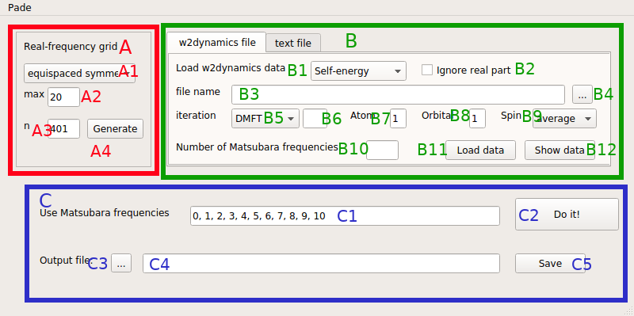
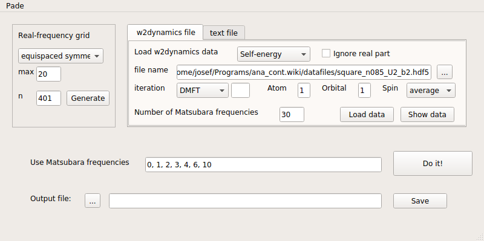

Introduction¶
This application is a user interface for analytic continuation by means of Pade interpolation. It can be used for analytic continuation from fermionic or bosonic Matsubara frequencies to real frequencies.
Before launching the program, I recommend to go to your preferred working directory, e.g. where you have stored the data that you want to continue.
Then you can start the program from the command line by /path/to/ana_cont/scripts/pade.py and the main window of the application will appear on the screen. First, we will now have a look at the main window and explain its features. At the end of this page, there is also a tutorial.
Main Window¶
Basically, the main window is very similar to the main window of MaxEnt. Therefore we will not again describe every widget, just the ones differ from MaxEnt.
{kind=link}

In the data type menu B13, there is now a third possible choice: “bosonic”. For bosonic data, the text input file contains only three columns:
Matsubara frequency
Data (real)
Error
There is no column for the imaginary part, since susceptibilities are real. Note that the error column still has to be present, although the error bars cannot be used in Pade.
The most visible difference of the user interface concerns frame C. In the line edit field C1 it is necessary to write the indices of the Matsubara frequencies that should be used for the construction of the Pade coefficients. Note that the computation time starts to considerably increase when using more than about 25 frequencies. The real-frequency grid in this case is merely the grid, at which the Pade approximant is evaluated. Therefore it is not in principle necessary to cover the whole band width, and spacing is not critical.
Tutorial¶
As a short tutorial, we consider the same doped square-lattice Hubbard model as in the MaxEnt tutorial.
For this choice of frequencies,
{kind=link}
we get this plot:

Note that some Matsubara frequencies can be left out for constructing the Pade approximant. In the fermionic case, it however seems to be important to use an odd number of data points on the Matsubara axis.
The output plot shows, in the top left panel, the resulting spectral function. In the top right panel, we show the loaded data, and the frequencies used for the Pade interpolation are marked by opaque red dots.
The bottom right panel shows a plot with the selected Matsubara frequencies and the interpolation that is given by the Pade approximant. The Pade approximant is a rational function that can be evaluated, in principle, on the whole complex plane. Ideally, it has poles only in the lower half-plane. If your data are noisy, or for some reason the selection of Matsubara frequencies is not good, the gray lines will show some features between the interpolated red dots. This means that there are poles close to the positive Matsubara axis. Although without such poles, noisy data can hardly be interpolated, they will result in strange features of the spectral function, especially if they are close to the real axis. Therefore, try to find a combination of Matsubara frequencies, where this does not occur. Alternatively, if the data are too noisy, better use MaxEnt or get better data (which I recommend!).